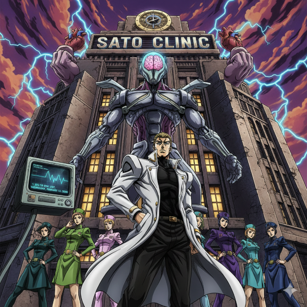
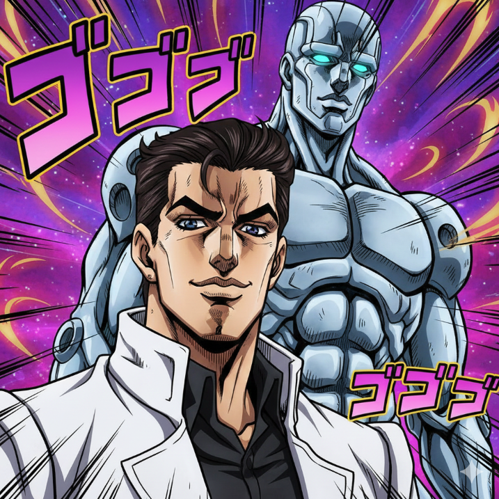
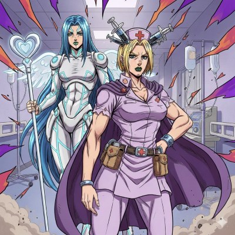

一般内科診療
風邪や発熱、喉の痛み、頭痛、腹痛などの症状を中心に、一般的な体調不良の診療を行っています。また、原因不明の不調や軽い症状であっても、早期診断に努めております。
「地域に根ざした医療」をモットーに

佐藤医院では、患者様の健康を第一に考え、今後も安心・安全な医療を提供し続けます。どんな小さな悩みでも、お気軽にご相談ください。私たちがしっかりとサポートさせていただきます。地域の皆様とともに、より健康で豊かな生活を築いていきたいと考えています。
佐藤医院のスタッフ一同、皆様のご来院を心よりお待ちしております。

風邪や発熱、喉の痛み、頭痛、腹痛などの症状を中心に、一般的な体調不良の診療を行っています。また、原因不明の不調や軽い症状であっても、早期診断に努めております。

高血圧症、糖尿病、脂質異常症（高コレステロール血症）、メタボリック症候群など、生活習慣病の診断と治療を行います。病気の進行を予防し、健康維持のための生活指導や薬物療法を行います。
胃痛、胃もたれ、胸やけ、便秘、下痢などの消化器系の不調に対応しています。必要に応じて胃カメラや超音波検査などを実施し、胃腸の健康をサポートします。
咳、息切れ、胸の痛みなど、呼吸器系の症状について診察を行っています。季節性の喘息やアレルギー性鼻炎、慢性閉塞性肺疾患（COPD）などにも対応し、適切な治療と予防をサポートします。

